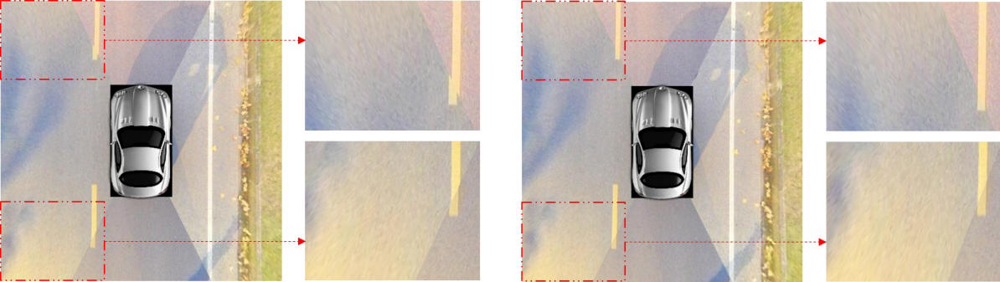
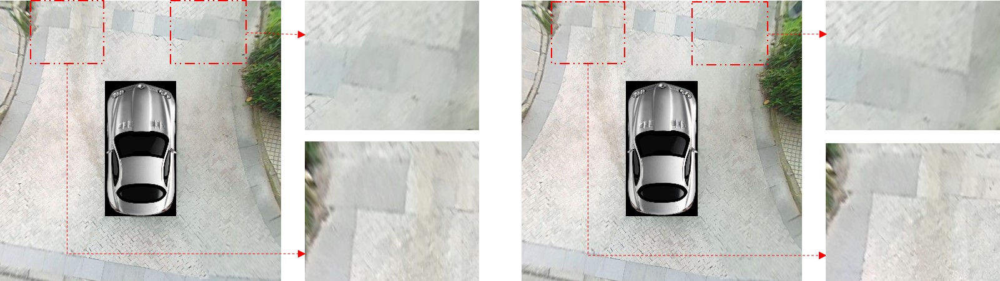

|
Online Correction of Camera Poses for the Surround-view System: A Sparse Direct Approach Lin Zhang, Tianjun Zhang, and Shengjie Zhao, School of Software Engineering, Tongji University, China Xiao Liu, College of Information and Computer Sciences, University of Massachusetts Amherst, USA Yicong Zhou, Department of Computer and Information Science, University of Macau, Macau, China |
Introduction
This is the website of our project "Online Correction of Camera Poses for
the Surround-view System: A Sparse Direct Approach".
The surround-view system is an indispensable component of a modern ADAS system.
It assists the drivers to monitor the road condition around the vehicle and to
make better decisions. A typical surround-view system consists of four to six
fisheye cameras. By calibrating the intrinsics and extrinsics of the system
accurately, a top-down surround-view can be generated from raw fisheye images.
However, poses of these cameras sometimes change due to bumps, collisions
orchanges of tire pressure while driving. If poses' representations are not
updated accordingly, observable geometric misalignment will appear in the
generated surround-view image. At present, when the geometric misalignment
appears, drivers have to drive to 4S stores for re-calibration. How to correct
camera poses of the system online without re-calibration is still an open issue.
To settle this problem, we introduce the sparse direct framework into the camera
pose calibration field and propose a novel optimization scheme of a cascade
structure. By minimizing the photometric errors in overlapping regions of
adjacent birds-eye-view images, our method can correct the misalignment of the
surround-view image online and can obtain high-precision camera poses without
re-calibration. This method is actually composed of two levels of optimization.
The first level of optimization is faster, but it suffers from the loss of DOF.
When the first-level optimization does not perform satisfactorily, we need the
second-level optimization to compensate for the lost DOF. Experiments show that
our method can effectively eliminate the misalignment caused by moderate camera pose changes in the surround-view system. More importantly, our online
camera pose correction scheme relies totally on minimizing photometric errors
without the need for additional physical equipments or calibration sites.
Therefore, it can be easily integrated into pipelines of existing surround-view
systems to improve their robustness and stability.
Main idea of the proposed approach
Source Codes
This is the code of the proposed online cameras' poses correction approach for the surround-view system. To run the code, read the following notes:
1)
Prerequisites
We have tested the code with Ubuntu 14.04, but it should be easy to compile in
other platforms.
C++11 or C++0x Compiler
We use the new thread and chrono functionalities of C++11.
OpenCV
We use OpenCV to manipulate images and features. Download and install
instructions can be found at: http://opencv.org. We use 3.4.1, but it should
also work for other versions higher than 3.0.
Eigen3
Download and install instructions can be found at: http://eigen.tuxfamily.org.
g2o
We use g2o library to perform non-linear optimizations. More info can be found
in http://openslam.org/g2o.html.
Sophus
It's an Lie algebra library. More info can be found in https://strasdat.github.io/Sophus/.
2) Building the project
We use CMake to build the project on ubuntu 14.04.
cd Online_Correction/
mkdir build
cd build
cmake ..
make
cd ..
There has been no rules for "make install" yet, so if you want to use the
library in other project, maybe you can copy the headers and the lib file to
system path by hand.
3) Run the project
After compile and build the project, some executable files will be stored in the
./bin/ .
We have prepared one test sample set. For the version without pixel selection:
./bin/pose_adjustment_v2
For the version which follows a sparse direct framework:
./bin/pose_adjustment_v3
After an image appears, press enter to see the whole optimization process.
Sample Results
For each pair in the following table, the left image is generated with disturbed extrinsics and the right one is synthesized with corrected camera poses obtained by our approach. It can be observed that for all the examined cases, after applying our camera pose optimization approach, the geometric misalignments between adjacent birds-eye-views are all greatly reduced, corroborating the superior efficacy of the proposed approach.
|
|
|
 |
|  |
|
|
Demo Videos
Last update: Feb. 7, 2020